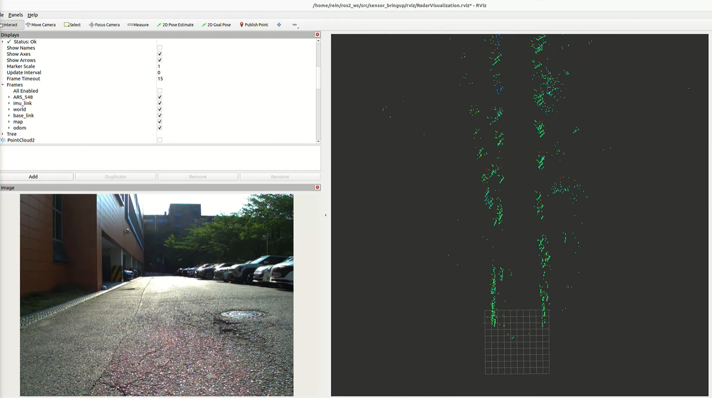

4D Radar Ego-Velocity Estimation

Estimating the ego-vehicle's velocity directly from 4D radar measurements, toward robust self-motion estimation for autonomous driving under conditions where vision or other sensors degrade.
Focus — 4D radar · ego-velocity estimation · autonomous driving perception